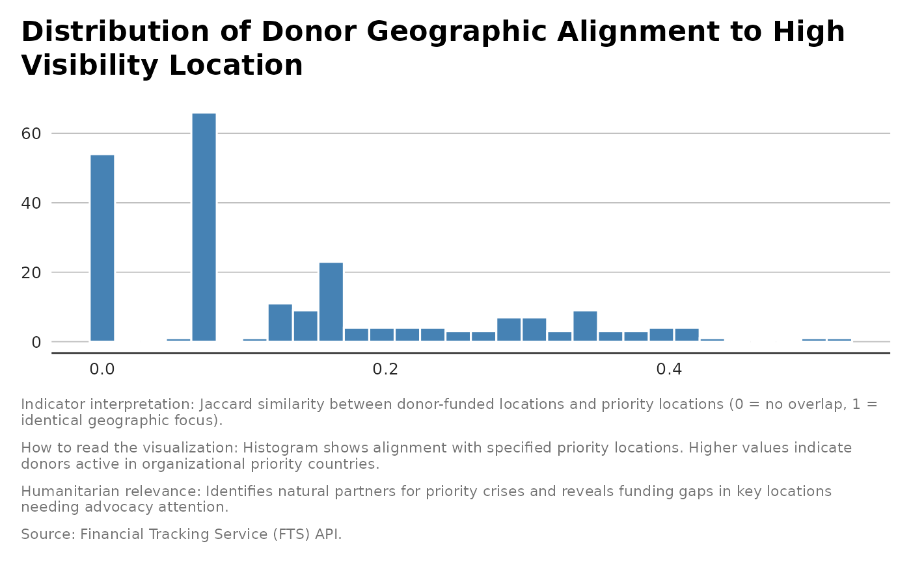

Geographic Alignment
indicator_donor_geographic_alignment.RdCalculates the Jaccard similarity between donor-funded locations and reference locations.
Examples
destinations <- flows |>
tidyr::unnest(destinationObjects, names_repair = "unique", names_sep = "_") |>
dplyr::filter(destinationObjects_type == "Location") |>
dplyr::pull(destinationObjects_name) |>
unlist() |>
unique()
#dput(destinations)
# High-visibility, acute crises get funded
high_visibility <- c(
"Ukraine", "Syrian Arab Republic", "Occupied Palestinian Territory",
"Sudan", "South Sudan", "Yemen", "Afghanistan", "Myanmar",
"Ethiopia", "Somalia", "Democratic Republic of the Congo",
"Central African Republic", "Haiti"
)
# Long-standing crises with major donor attention maintain coverage
long_standing <- c(
"Lebanon", "Jordan", "Iraq", "Türkiye", "Bangladesh", "Chad",
"Cameroon", "Niger", "Burkina Faso", "Mali", "Nigeria",
"Colombia", "Venezuela, Bolivarian Republic of"
)
# Regional refugee responses collapse
regional_refugee <- c(
"Region - Southern and Eastern Africa", "Region - Middle East and Northern Africa",
"Region - West and Central Africa", "Region - Latin America and the Caribbean",
"Region - Asia and the Pacific", "Uganda", "Kenya", "Tanzania, United Republic of",
"Djibouti", "Mauritania", "Cameroon", "Moldova, Republic of"
)
# Lower-profile crises get abandoned
lower_profile <- c(
"Burundi", "Rwanda", "Eritrea", "Nepal", "Georgia", "Cuba",
"Dominican Republic", "Madagascar", "Mozambique", "Angola", "Malawi",
"Comoros", "Liberia", "Côte d'Ivoire", "Senegal", "Ghana", "Guinea",
"Guinea-Bissau", "Lesotho", "Eswatini", "Zambia", "Cambodia",
"Lao People's Democratic Republic", "Philippines", "Timor-Leste",
"Sri Lanka", "Togo", "Benin", "Gambia", "Nicaragua", "Honduras",
"El Salvador", "Guatemala", "Costa Rica", "Peru", "Ecuador", "Panama",
"Bolivia, Plurinational State of", "Papua New Guinea", "Solomon Islands",
"Kiribati", "Vanuatu", "Micronesia, Federated States of", "Tonga",
"Fiji", "Cook Islands", "Tuvalu", "Samoa", "Nauru", "Niue", "Palau",
"Maldives", "Armenia", "Uzbekistan", "Kazakhstan", "Turkmenistan",
"Azerbaijan", "Tajikistan", "Kyrgyzstan", "Mongolia", "Mauritius",
"Cape Verde", "Equatorial Guinea", "Gabon", "Botswana", "Namibia",
"Seychelles", "Trinidad and Tobago", "Grenada", "Saint Lucia",
"Saint Vincent and the Grenadines", "Barbados", "Guyana", "Suriname",
"Belize", "Anguilla (United Kingdom)", "Aruba (Netherlands)",
"Curaçao (Netherlands)"
)
donor <- indicator_donor_geographic_alignment(flows,
priority_destinations = high_visibility)
#table(donor$Geographic_Alignment)
library(ggplot2)
ggplot(donor, aes(x = Geographic_Alignment)) +
geom_histogram( fill = "steelblue", color = "white") +
unhcrthemes::theme_unhcr(grid = "Y", axis = "X", axis_title = FALSE) +
labs(
title = "Distribution of Donor Geographic Alignment to High Visibility Location",
x = "",
y = "Number of Destination",
caption = paste(
"Indicator interpretation:",
"Jaccard similarity between donor-funded locations and priority
locations (0 = no overlap, 1 = identical geographic focus).", "\n\n",
"How to read the visualization:",
"Histogram shows alignment with specified priority locations. Higher
values indicate donors active in organizational priority countries.",
"\n\n",
"Humanitarian relevance:",
"Identifies natural partners for priority crises and reveals funding gaps
in key locations needing advocacy attention.", "\n\n",
"Source: Financial Tracking Service (FTS) API."
)
)
#> `stat_bin()` using `bins = 30`. Pick better value `binwidth`.
